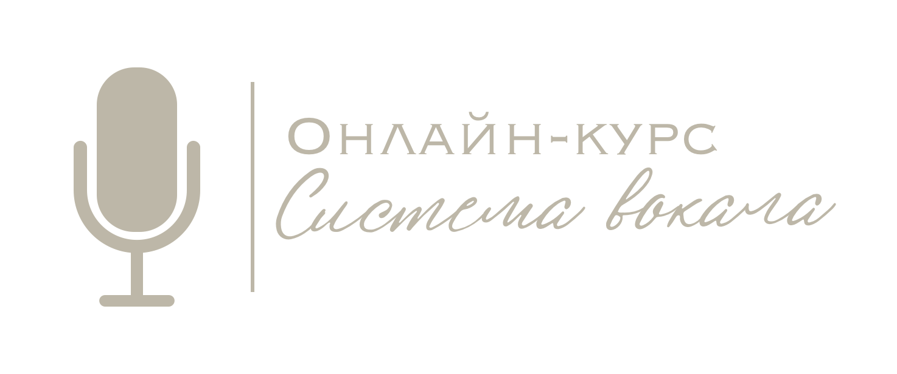

🎤 Система вокала
Гид по решению вокальных проблем
Полный справочник симптомов, причин и решений для развития вашего голоса
📖 Словарь терминов — не понимаете слово в тексте? Загляните сюда
Словарь вокальных терминов
Частые запросы:
боль в горле
срывы на крике
тяжелый звук
гнусавость
воздушный звук
высокие ноты
📋
Все
📢
Громкость
🎯
Плотность
🛟
Удобство
🌟
Красота
✨
Яркость
🎼
Высота
🎵
Тембр
🔖
Избранное
Найдено:
0
проблем